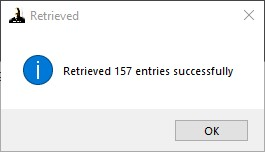
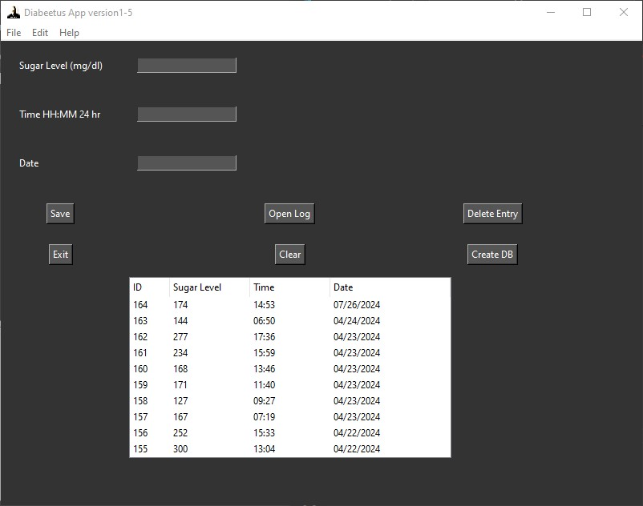
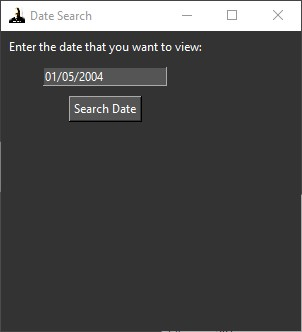
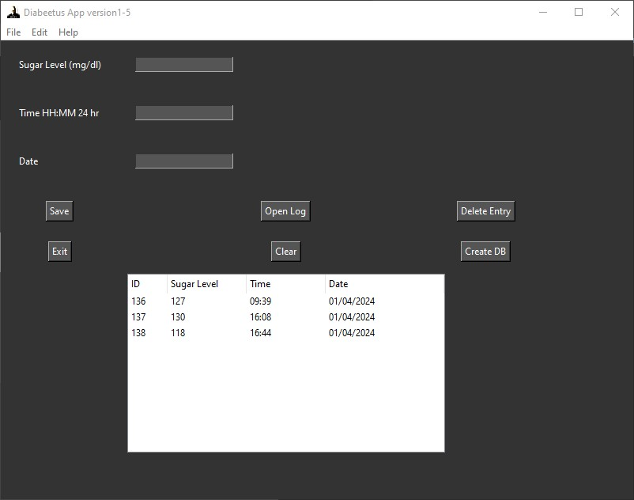

This is one of the first applications that I made using a GUI for input/output instead of a terminal. The data entries are stored as a SQL file and can be edited by the buttons in the GUI which represent SQL commands.
The result of clicking open log
You can also search for records by date:
Go to File -> Search Date to search for a specific date:
Results:
